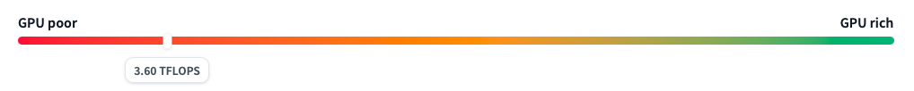
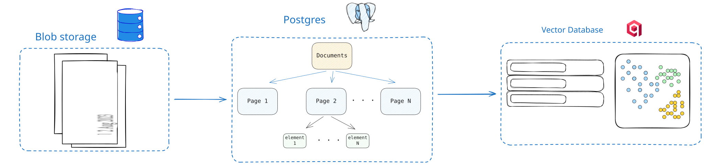
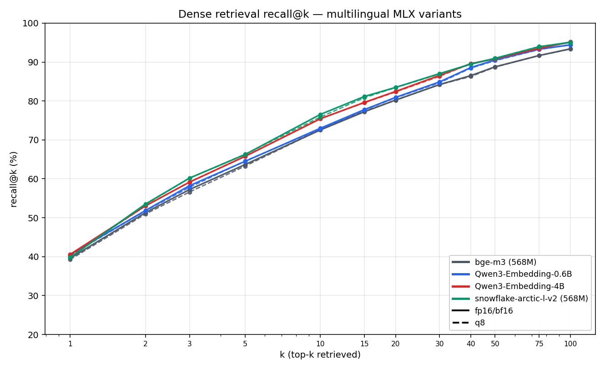
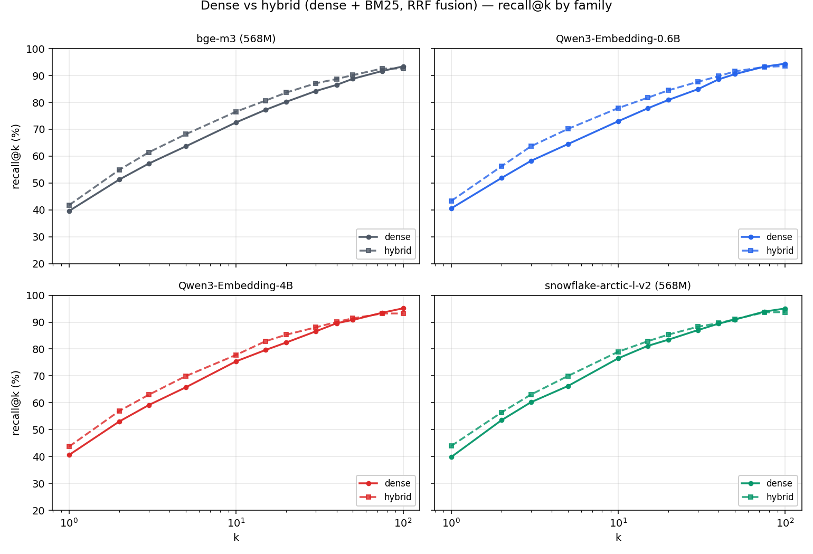
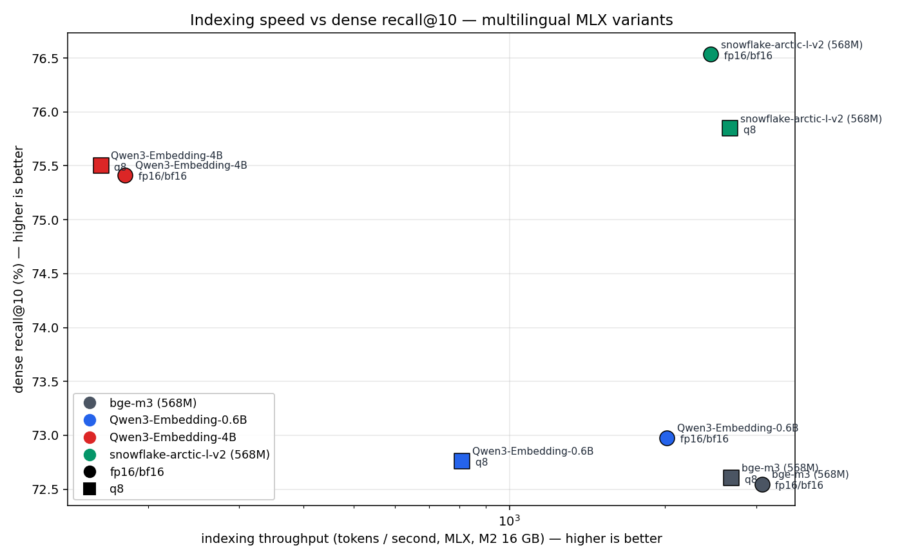
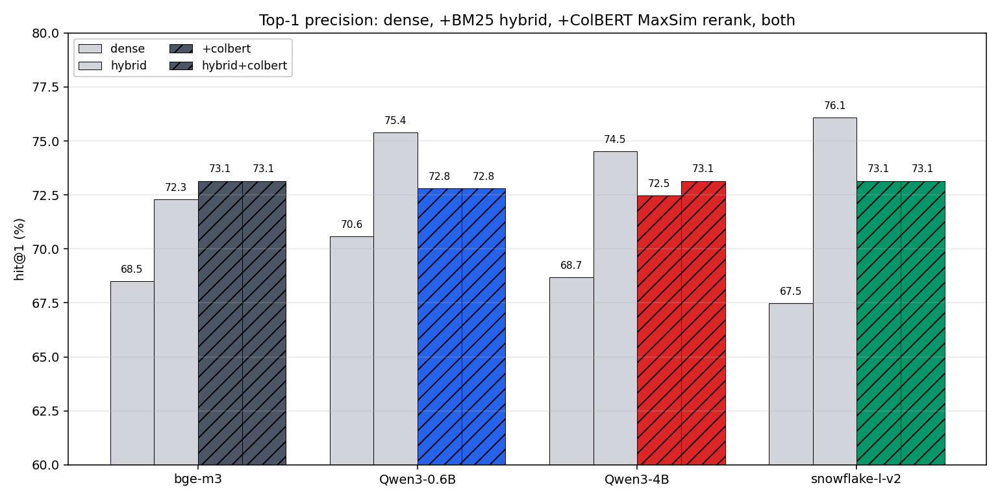

This is a post about building a grounded RAG system from scratch. The goal is simple to state: point it at a stack of PDFs, ask a question in natural language, get back an answer together with the exact bounding box on the exact page that answer came from. The constraint is what makes it interesting. The whole thing has to run on the laptop I’m writing on, a MacBook Pro M2 with 16 GB of unified memory, no cloud GPU.

The post starts from the simplest version of the pipeline that hits the goal, then iterates from there. Each iteration is its own subsection, with the reasoning, the numbers, and a link to whatever code or model weights came out of it.
Grounded, Fast, Efficient
Three goals, easy to state.
Grounded. Every answer has to point back to the bounding box on the page it came from. Not a citation in plain text, a visible region on the rendered page, one you can click on and verify.
Fast. Sub-second retrieval on a single query. Anything slower turns iteration into a chore, and this is a system meant to be iterated on a lot.
Efficient. Fits in 16 GB. Runs alongside a browser, an editor, and the Docker stack the system itself depends on. No cloud GPU, no API key billed by the token. The whole thing needs to be self-contained enough that someone could clone the repo and have it work.
The stack
Anything we want to retrieve later, we have to store first. The system has three layers underneath: the binary files that come in, the structured representation we extract from them, and the vector index we build on top to make them searchable.
Document storage. PDFs land in a blob store keyed by a UUID. Local case is just a directory; behind a thin fsspec wrapper so the day this needs to live in S3 instead, the change is a config swap.
The structured database. A document has pages, each page has layout elements (paragraphs, headings, tables, figures, formulas, code blocks), and each element has one or more bounding boxes. That hierarchy lives in Postgres via SQLAlchemy. On top of the elements come chunks, the unit the embedder sees and retrieval returns. Each chunk keeps a link back to the elements it covers, so a hit can be traced to specific page regions.
The vector store. One vector per chunk, in Qdrant, keyed by chunk UUID, with a small payload (just the parent document id, for filtering). Everything else stays in Postgres.
The embedder. Starting point is bge-m3: 1024-dimensional vectors, ~1.1 GB resident at fp16 on Apple Silicon, a defensible default for general-purpose retrieval.

The parser is where the real work begins, and that’s where the rest of this post lives.
The parsing
Docling is the tool we use to turn a PDF into a structured tree. That tree is the input to everything that follows: chunking, embedding, retrieval, grounding. It controls what each later stage can see. So before we build any of that on top, we should know how the parsing actually behaves on our corpus, what it costs, and whether the defaults are the right ones.
Two routes Docling offers
Docling exposes two top-level ways to turn a page into structured content.
The first is the traditional pipeline: a layered stack of small specialist models running in sequence. A CNN layout detector finds text blocks, tables, pictures, formulas, and code. A separate model parses table structure into rows and columns. A small vision-language model runs on cropped code and formula regions to turn them into LaTeX or source text. A figure classifier labels pictures by type. The text inside each block comes from the PDF’s own text layer, extracted by a dedicated parser. Each stage has one job, runs on one slice of the page, and produces one piece of the final document.
The second is the VLM pipeline: one large vision-language model gets the rendered page image and emits the entire structured document for that page in one shot. No separate layout step. No separate table parsing. The model decides where the text blocks are, where the tables are, what the cells contain, which regions are pictures, all at once. The Docling-blessed model for this path is Granite-Docling-258M, available as an MLX export for Apple Silicon.
Both routes produce a structurally similar DoclingDocument, and Docling lets us swap between them by changing a single configuration object.
What each route costs on our corpus
Seven research papers, 155 pages total. Each variant runs each PDF once untimed (warmup) then three times measured; we report the median wall time per variant per doc, summed across the corpus. All on Apple Silicon. Code: benchmark/pdf_pipeline/.
| Variant | Total wall (s) | Per-page (s) |
|---|---|---|
| traditional | 582.4 | 3.8 |
| VLM (Granite-Docling-258M MLX) | ~2 000 | ~13 |
Roughly one order of magnitude. The traditional pipeline does cheap text extraction on the bulk of the page (the prose, where the PDF already has a clean text layer) and saves the expensive VLM passes for the few regions that genuinely need them: the cropped code and formula boxes. The VLM pipeline pays the full VLM cost on every page to re-derive content that is already sitting in the PDF text stream. For our corpus, which is born-digital papers with clean text layers, the traditional pipeline is the right trade.
Inside the traditional pipeline
The traditional pipeline is a pipeline in the literal sense: pages stream through ordered stages, with multiple pages in different stages at once. Each stage owns one piece of the page-to-document translation, and each one is a place we can attack independently.
| Stage | What it does | Implementation |
|---|---|---|
page_parse |
Render the page to an image at two scales, extract text cells with bboxes from the PDF text layer | pypdfium2 (C++) for rendering, docling-parse (C++) for text extraction |
layout |
Detect text blocks, tables, pictures, formulas, code regions on the rendered page | Object-detection CNN running on MPS |
table_structure |
Parse the cell grid of each detected table | TableFormer V1, CPU on Apple Silicon |
doc_enrich |
Crop each detected code or formula region and run a VLM on it to get LaTeX or source | Granite-Docling-258M, MLX |
reading_order |
Decide the order in which elements appear in the final document | CPU heuristics |
doc_assemble |
Build the final DoclingDocument tree |
Pure Python |
Picture classification piggybacks on doc_enrich. Tables are a stage of their own. Code and math sit inside doc_enrich because they share the same VLM and the same per-region inference path.
Where is the bottleneck?
Per-page wall time across the corpus, with tables on:
| Stage | Per-page wall (ms) |
|---|---|
page_parse |
500 |
layout |
497 |
table_structure |
544 |
doc_enrich |
2 936 |
doc_enrich dominates the average. But the average hides the most useful fact: the bottleneck depends on the document. Per-page wall time, split per paper:
| Pages | Wall (s/page) | doc_enrich (s/page) |
doc_enrich / wall | |
|---|---|---|---|---|
| 01_attention_is_all_you_need.pdf | 15 | 1.27 | 0.63 | 50% |
| 02_mistral_7b.pdf | 9 | 0.79 | 0.09 | 12% |
| 03_mixtral_8x7b.pdf | 13 | 1.42 | 0.52 | 37% |
| 04_qjl.pdf | 13 | 4.81 | 3.85 | 80% |
| 05_polarquant.pdf | 22 | 8.72 | 7.97 | 91% |
| 06_turboquant.pdf | 25 | 6.36 | 5.39 | 85% |
| 07_deepseek_v4.pdf | 58 | 2.15 | 1.34 | 62% |
A page of mistral costs 90 ms in doc_enrich. A page of polarquant costs 8 seconds. Two orders of magnitude. The reason is what the layout step finds on each page: very few formulas in the text-heavy papers, dozens of code and formula crops per page in the quantization papers. That spread is what makes a corpus-wide “where do I optimise” question deceptive: optimising the rendering backend would barely move polarquant, and optimising the formula VLM would barely move mistral. We attack the stage that dominates the documents that matter. For us, that’s the math-heavy papers, and that means the code and formula VLM is the first place to look.
First improvement: the code & formula model
doc_enrich is a per-region VLM inference. Every code block and every math formula the layout step detects gets cropped from the rendered page and sent through a vision-language model that emits the LaTeX (for formulas) or source text with a language tag (for code). On the math-heavy papers there can be dozens of these per page. The VLM is what the stage is.
Two models for the job
Two candidates exist for this slot. The default is Granite-Docling-258M, the same general-purpose document VLM that also powers Docling’s full-page VLM pipeline. The natural specialist is CodeFormulaV2, purpose-built for crop-level transcription and trained on millions of code and formula images. They are similar in size (~300 M parameters). Docling’s model catalog lists CodeFormulaV2 as the recommended option for the code/formula stage. The catch is in the same table: CodeFormulaV2’s supported inference engines are CPU / CUDA / XPU. There is no MLX entry.
Porting CodeFormulaV2 to MLX
CodeFormulaV2 is an Idefics3 finetune, and Idefics3 is already a first-class architecture in Blaizzy/mlx-vlm. So the work is a weight conversion plus a small contribution that registers CodeFormulaV2 as a supported target of the existing idefics3 runtime. Three quantised variants are published:
CPU vs MLX
Three formula crops harvested from a page of polarquant.pdf, run through CodeFormulaV2 on both backends with greedy decode, identical inputs, two timed runs each:
| Crop | Output | CPU torch (s) | MLX bf16 (s) | Speedup |
|---|---|---|---|---|
| short formula | 19 tokens | 2.06 / 2.18 | 0.89 / 0.89 | ~2.3× |
| medium formula | 151 tokens | 4.93 / 4.86 | 1.70 / 1.68 | ~2.9× |
| medium formula | 124 tokens | 4.30 / 4.29 | 1.55 / 1.52 | ~2.8× |
| median | 4.30 | 1.54 | 2.8× |
Per crop, MLX is roughly 2.8× faster. The gap compounds across the math-heavy papers, where a single page can carry dozens of code and formula crops; across the full corpus on the MLX path, doc_enrich costs 269 seconds out of 329 seconds total wall.
Per-page doc_enrich cost on the math-heavy papers, MLX:
| Pages | doc_enrich (s/page) |
|
|---|---|---|
| 04_qjl.pdf | 13 | 2.68 |
| 05_polarquant.pdf | 22 | 4.77 |
| 06_turboquant.pdf | 25 | 2.65 |
| 07_deepseek_v4.pdf | 58 | 0.82 |
The model the catalog actually recommends is now available to the laptop user, on the hardware the laptop has.
Second improvement: the layout detector
The layout stage uses docling-layout-heron, an RT-DETRv2 object detector. Docling runs it on MPS through PyTorch. We ported RT-DETRv2 to MLX in mlx-vlm PR #1195, with the bf16 weights published at:
Full-corpus layout inference, 155 pages, median of 3 measured loops per PDF:
| Backend | Corpus wall (s) | Per-page (s) |
|---|---|---|
| PyTorch on MPS (Docling default) | 39.20 | 0.253 |
| MLX bf16 (this port) | 27.78 | 0.179 |
About 1.4× faster on the same model, same corpus, same hardware. End-to-end, the layout stage is a small fraction of total wall (doc_enrich still dominates), so this iteration moves the corpus number by only a few seconds. The win is real but local; we keep it because the change is mechanical and the port lives in mlx-vlm anyway.
Results
The two iterations together, CodeFormulaV2 on MLX for doc_enrich and RT-DETRv2 on MLX for layout, change the parsing budget on the same corpus, same hardware, same papers. Per-stage corpus totals (s), comparing the CPU path Docling’s catalog recommends (no MLX engine exists today for CodeFormulaV2 on Apple Silicon) to the same pipeline with our two ports plugged in:
| Stage | CPU baseline | + MLX ports (this work) |
|---|---|---|
page_parse |
30.2 | 34.1 |
layout |
70.6 | 32.1 |
doc_enrich |
6 479.6 | 260.5 |
doc_assemble |
1.0 | 0.7 |
reading_order |
0.6 | 0.3 |
doc_enrich is the entire story: 6 480 s drops to 260 s, a 24.9× shrink on the stage that owns 99 % of the CPU baseline. The layout port adds a 2.2× speedup on its own stage. The other stages are unchanged Docling code.
Corpus-wide:
| Pipeline configuration | Total wall | Per-page (s) | Speedup |
|---|---|---|---|
| CodeFormulaV2 on CPU (Docling catalog recommendation) | 6 556 s (1 h 49 m) | 42.3 | 1.0× |
| CodeFormulaV2 MLX + RT-DETRv2 MLX (this work) | 301 s (5 min) | 1.94 | 21.8× |
From 1 h 49 m to 5 minutes on the same laptop, same papers, same model recommended by Docling’s catalog. What lands in Postgres at the end of it is the same DoclingDocument tree, with the same bounding boxes, ready for the next chapter: chunking and the embedder.
The embedding
The parser produces paragraph-anchored chunks. The embedder turns those chunks (and the user’s questions) into the vectors a similarity search will compare. The choice anchors everything downstream, so it is worth settling now, before we touch hybrid retrieval or reranking.
The usual framing is “pick the highest-scoring model on MTEB and move on”. For this project, three project-specific criteria sit above leaderboard position.
Multilingual. The corpus is mostly English today, but the system should accept French papers and French questions without rebuilding the index. That rules out most of the small-and-fast end of the leaderboard.
Sub-1B parameters. The pipeline already holds the parser, the layout detector, the formula VLM, and Qdrant resident. The embedder coexists with those on a 16 GB laptop. 7B and 8B models are out.
Recall@k matters most at this stage. The retriever in this chapter is the first stage of a pipeline that will get a sparse-search leg (BM25 with RRF fusion) and a late-interaction reranker over the top-k. Both of those add precision back at the top of the ranking. What they cannot do is rescue a paragraph the dense retriever never returned. The metric to optimise here is “did the relevant paragraph make it into the top-k candidate pool I will hand to the next stage?” That is recall@k.
The candidates models
Four multilingual families, each in native precision (fp16 or bf16) and in 8-bit weight quantisation. All four run on Apple Silicon through mlx-embeddings. None of them required new MLX model code: the CLS-pooling dispatch we used to need a local patch for is merged upstream now.
| Family | Params | Architecture | Notes |
|---|---|---|---|
| bge-m3 | 568 M | XLM-RoBERTa-large | 100+ languages, CLS-pooled. |
| Qwen3-Embedding-0.6B | 600 M | Qwen3 decoder | Last-token pooling, asymmetric (query prompt). |
| Qwen3-Embedding-4B | 4 000 M | Qwen3 decoder | Same family, 6.7× the parameters. Top of our size envelope. |
| snowflake-arctic-embed-l-v2.0 | 568 M | XLM-RoBERTa-large | 74 languages, CLS-pooled. |
Dense recall@k
Benchmark: 581 questions, exact ANN search (brute-force cosine, no HNSW), the layout-anchored ground truth from earlier in the post, k=100 retrieved per question. Code: eval/.

Snowflake-arctic-embed-l-v2.0 leads at every k from 3 to 100.Qwen3-4B sits 1-2 recall points below it through k=10 to k=50. Qwen3-0.6B and bge-m3 are tied with each other and trail the leaders by 4-5 points at k=10. The q8 (dashed) lines track the full-precision ones within 0.5-1 recall point everywhere.
We chose to keep Snowflake-arctic-embed-l-v2.0.
Hybrid retrieval
Hybrid retrieval is the next chapter, but the embedder pick should hold up under both modes, so a preview is useful here.

Recall@10 with the BM25 leg added:
| family | dense r@10 | hybrid r@10 | lift |
|---|---|---|---|
| bge-m3 | 72.5 % | 76.5 % | +4.0 |
| Qwen3-0.6B | 72.9 % | 77.8 % | +4.9 |
| Qwen3-4B | 75.4 % | 77.7 % | +2.3 |
| snowflake-arctic-l-v2 | 76.5 % | 78.9 % | +2.4 |
Hybrid lifts every family, and lifts the weaker dense retrievers more. The rank order across families is unchanged after fusion. The embedder choice is robust to retrieval mode.
We keep Snowflake-arctic-embed-l-v2.0 with BM25 hybrid search
Quantization
A 568 M model in bf16 is 1.1 GB on disk. The q8 version is 576 MB. On a 16 GB machine where the pipeline already holds the rest of the pipeline, halving the embedder’s memory footprint is real headroom.
The recall cost at k=10 is at most 0.7 points across the four families, and closes to nothing by k=50. Quality-wise, q8 is free.
We chose Snowflake-arctic-embed-l-v2.0 quantized to 8 bits with BM25 hybrid search.
Indexing speed

The 568 M and 600 M models index in well under a minute for the 581-paragraph corpus (800-3000 tokens/second, depending on family and precision). Qwen3-4B is roughly 10× slower (~180 tokens/second; about six minutes to re-index the corpus). At the 100k-paragraph scale a real-world corpus would have, that is the difference between an embed step that takes a few minutes and one that takes an hour.
q8 is not uniformly faster than full precision on MLX. It is faster for Snowflake (1.1×), slightly slower for bge-m3 and Qwen3-4B, and noticeably slower forQwen3-0.6B (2.5× slower). The gap depends on which architecture has a fully-vectorised dequantisation path in mlx-embeddings at this version, and is the kind of thing that closes upstream as more families get tuned. For now: treat q8 as a memory and disk win, not a speed win.
The cleanest Pareto point on the chart is snowflake-arctic-l-v2 q8: best recall@10 of any sub-1B variant, fastest throughput of any sub-1B variant.
The pick
snowflake-arctic-embed-l-v2.0, q8. Tops dense recall at every k tested, tops hybrid recall too, shares the 568 M size class with bge-m3, and the q8 quantisation gives us a 576 MB on-disk footprint with no big quality cost.
Reranking
The next logical step after hybrid retrieval is reranking: take the top-K candidates from the prefetch and re-score them with a more expensive but more accurate model. The usual reranker family is the cross-encoder. One model, taking a (query, document) pair, emits a relevance score. The catch is cost. A cross-encoder makes one full forward pass per candidate, and competitive multilingual cross-encoders are 500M+ parameters. With top-K=50, that is 50 forwards through a heavy model per query. Our latency budget is sub-second total; a cross-encoder rerank alone would blow that.
Late-interaction (ColBERT-style) reranking offers a different trade-off. Each document is encoded once into a sequence of per-token vectors at index time and stored on disk. At query time, the query is encoded the same way, and the score is a cheap MaxSim aggregation over per-token similarities. The work the cross-encoder pays per-pair at query time is amortised at index time, paid once per document. The model size is similar but the per-query cost drops from “K model forwards” to “1 model forward + K small dot-product reductions”. That shape fits the latency budget. It is also why we already configured the late-interaction multi-vector field in Qdrant earlier in the post.
The multilingual options
We considered two multilingual late-interaction models:
jinaai/jina-colbert-v2: 559 M parameters, 94 languages, 128-dim per-token vectors.- BAAI/bge-m3 multivector head: the same bge-m3 we already load for dense, with its multi-vector head applied to per-token outputs. 1024-dim per token, eight times the storage and the MaxSim compute of jina. It is not Matryoshka-trained, so naively truncating to a comparable 128-d would discard most of the signal in unprincipled ways.
We picked jina-colbert-v2: native low dim, training designed for the task, and the multilingual coverage is strictly broader than bge-m3’s.
We ported jina-colbert-v2 to MLX (src/rag/embedding/colbert.py) on top of the same xlm-roberta-rope backbone we vendored from mlx-vlm. Storage trick: the multi-vector field in Qdrant has HNSW disabled (hnsw_config.m=0) and lives on disk. It is only ever scored exact-MaxSim against the candidates the prefetch returns, so building a graph would be wasted work.
Hit@1 across the four multilingual families

| family | dense | hybrid | +colbert | hybrid+colbert |
|---|---|---|---|---|
| snowflake-l-v2 | 67.5 | 76.1 | 73.1 | 73.1 |
| Qwen3-4B | 68.7 | 74.5 | 72.5 | 73.1 |
| Qwen3-0.6B | 70.6 | 75.4 | 72.8 | 72.8 |
| bge-m3 | 68.5 | 72.3 | 73.1 | 73.1 |
jina-colbert-v2 does not improve our retrieval. Hybrid alone wins on three of four families. The one family where ColBERT helps (bge-m3) gains less than a point. Stacking ColBERT on top of hybrid ties “+ColBERT alone” in every family, which means the BM25 leg surfaces candidates that ColBERT then deranks back. The two scoring systems are not stacking; they are trading.
The full metric table on snowflake-l-v2 (our picked embedder):
| variant | hit@1 | hit@5 | hit@10 | recall@10 | mrr | ndcg@10 |
|---|---|---|---|---|---|---|
| hybrid (no rerank) | 73.8 | 92.5 | 96.2 | 78.9 | 82.1 | 71.6 |
| hybrid + ColBERT | 73.1 | 91.9 | 95.4 | 76.3 | 81.4 | 69.8 |
Two failure examples make the mechanism concrete. Both are queries where snowflake-hybrid had the right paragraph at rank 1 and ColBERT then demoted it.
Q: “What two-stage process does DeepSeek-V4-Flash follow when introducing sparse attention during training, and at what sequence length and token count is sparsity first activated?”
Hybrid rank 1 (correct): the training-recipe paragraph with the sparsity schedule and the token-count cutoffs.
ColBERT rank 1 (wrong): the paper’s abstract, which mentions “DeepSeek-V4-Flash”, “sparse attention”, and “training” multiple times but does not answer the specific question.
Right answer demoted to rank 16.
Why ColBERT failed here. The abstract has many tokens that match the query’s topic words. MaxSim sums those matches, so the abstract scores high. The specific training paragraph mentions the same topic words fewer times and loses on token count, even though it actually contains the answer.
Q: “How are the authors of the DeepSeek-V4 paper listed, and what does the asterisk () notation next to certain author names indicate?“*
Hybrid rank 1 (correct): the two-sentence answer, exactly: “Authors are listed alphabetically by their first name. Names marked with * denote individuals who have departed from our team.”
ColBERT rank 1 (wrong): an unrelated paragraph about Mixture-of-Experts architecture that happens to mention “DeepSeek-V4”.
Right answer demoted to rank 8.
Why ColBERT failed here. The right answer is short, about 25 tokens. MaxSim’s score scales with the number of high-similarity doc tokens, so short answers are systematically under-scored. The long MoE paragraph wins on token count.
The pattern across the 41 cases where ColBERT demoted the right answer is consistent: it rewards token-rich generic content; BM25’s IDF weighting rewards rare-word matches that pinpoint specific answers. On a corpus of short technical paragraphs answering specific questions, hybrid retrieval is the right tool. ColBERT was built for a different corpus shape.
What we ship
The retrieval pipeline stops at dense + BM25 with RRF fusion. ColBERT MaxSim does not earn its keep on this corpus, and stacking it on top of hybrid does not help in any family. We keep the MLX jina-colbert-v2 port in the codebase as a documented building block. If the corpus later shifts to long documents or to an out-of-domain mix, this is the obvious next thing to revisit.
Code state at time of writing: d72e899. Reproduce the parsing numbers: uv run python -m benchmark.pdf_pipeline --variants codeformulav2_mlx. Reproduce the embedder + late-interaction sweeps: uv run python -m eval.sweep.